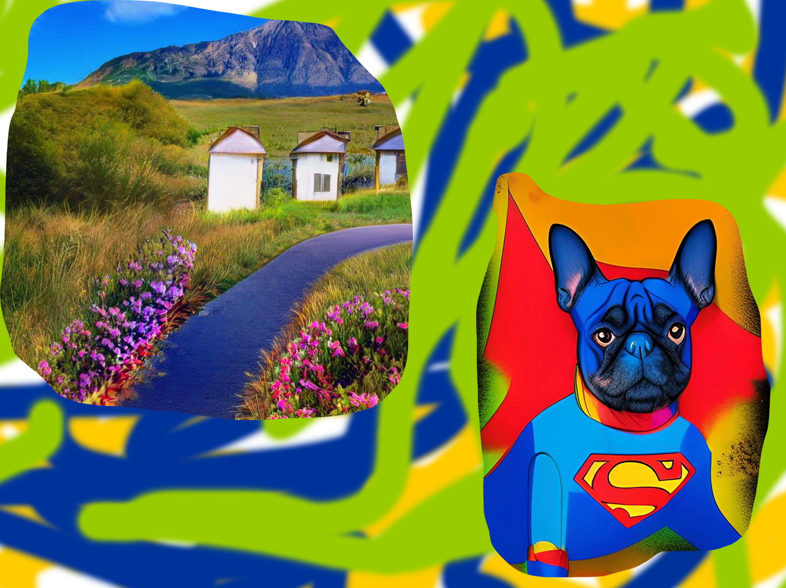
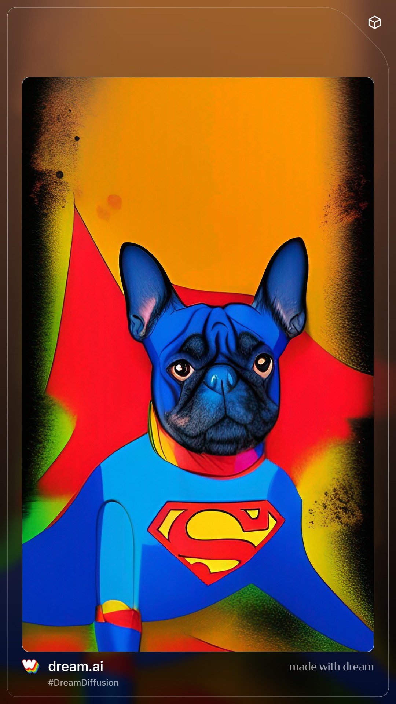

why would almost every artist now fighting against Ai painter?
the secret behind Ai painting
you can return to me page here Ai painting is staring a new wave of disagreement through out the art world, this is aminly because a algorithm it uses; stealing other painters drawing without giving credit, then using pieces of it to build up a new picture
some research on Ai painting will show that most Ai painting use a algorithm called GAN which is generative advertisal networks, this algorithm uses data sets and nerons to generate and process pictures, in the Ai painter means, it is using oter real human painters art work with out crediut and generating more pictures like it using it.
this website will give a basic idea of Ai painting and a analisis of the algorithm Ai painting uses
intro to algorithm
as you were told earlier this algorithm that generally all Ai painter uses is called GAN(general adversarial network) in easy GAN is just a kind of algorithm that uses two kinds of cauculation one called generative algorithm one called discriminative algorithms (i am not that tallented to write any) they came up together, one example is identifying and making real or fake artwork, it first uses data given to generate a fake artwork, which is a generative algorithm, then it uses discriminative algorithm to compare it wiht real pictures using given data thus adjusting its data again and again making it more precise

this infromation is researched from http://wiki.pathmind.com/generative-adversarial-network-gan if you want to look at a example, please reach to it
from gaugan.com/gaugan2/, you need to draw where things go, such as: mountain, road, water
this is a bit diffrent, you generate pictures from entering word
conclution
didnt you think the pictures from the Ai painters are like picture put into ps and removeing the rest and build together?
yes indeed because Gan take sample data online and cut them into pieces, so in all, no pixel is drawn by ai it self, insteas is some way of cutting and pasting